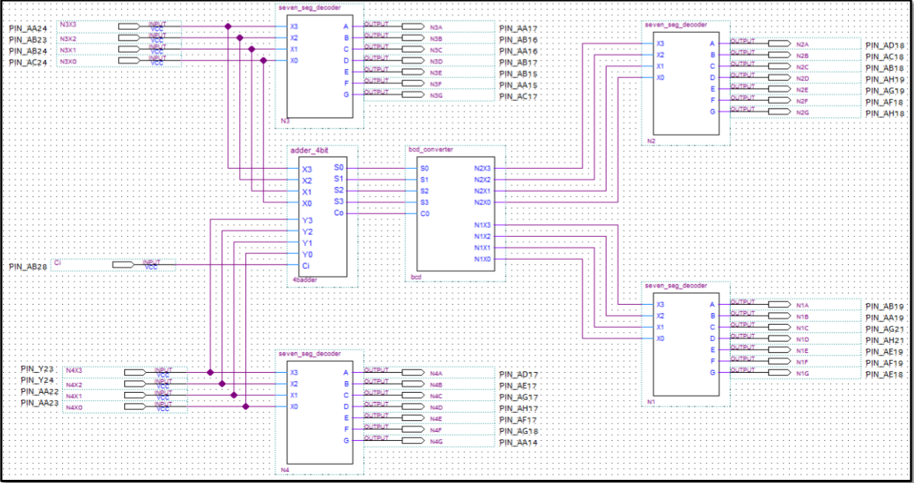

Binary Addition
This project was created in lab for Cpre 2810. This project used a digital circuit board with nine switches and six 7-segment indicators, and it was programmed using Verilog and a block diagram file. The goal of this circuit was to have four switches per number, and have two number 0-15 be added. The ninth switch was used as a "carry bit". The seven segment indicators displayed each number being added as hexadecimal, and displayed the output as a base 10 integer ranging from 0-31. This project further strengthened my skills using Verilog, Quartus Prime, and drawing circuits as a whole. This creation is important outside of the classroom because computers need to be able to execute calculations for addition, and this creation is a solution to that issue. It converts many simple commands into a very complex and functional solution.
